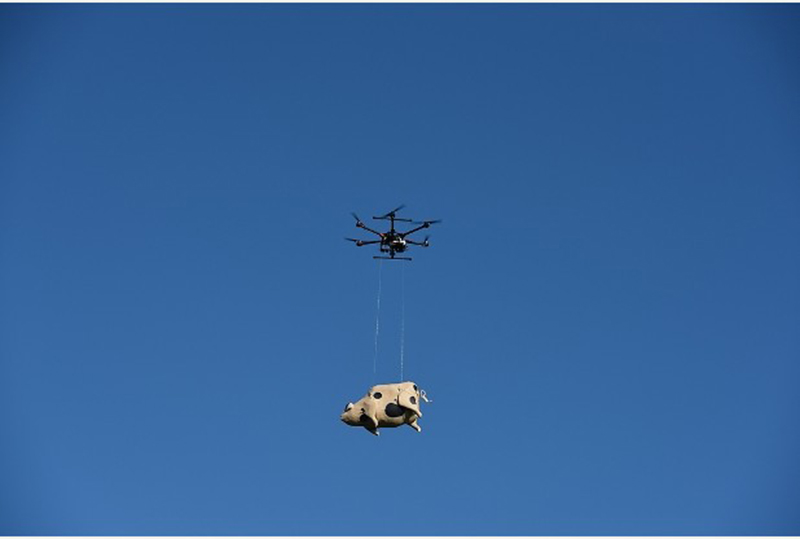
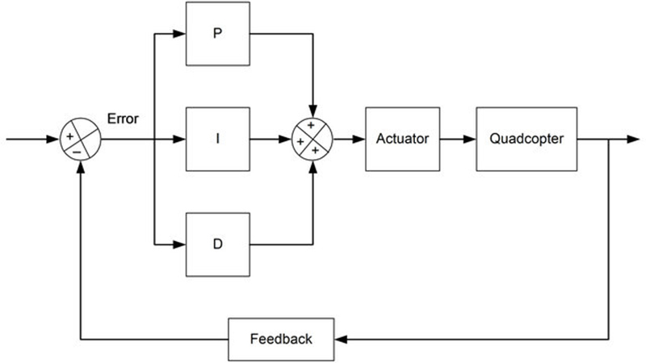
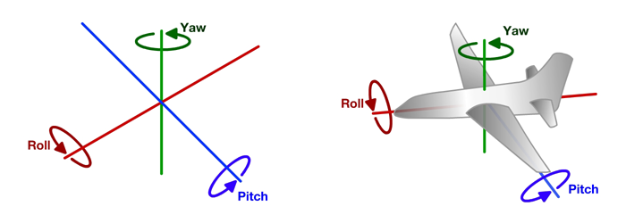
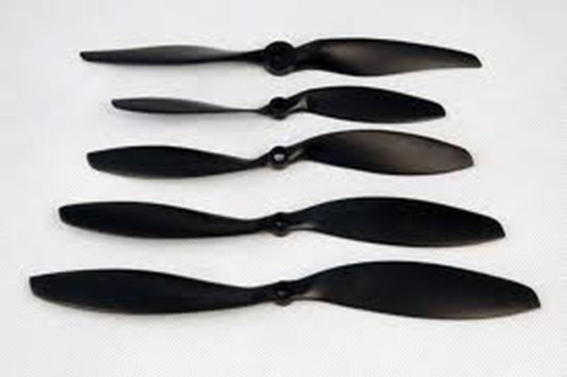
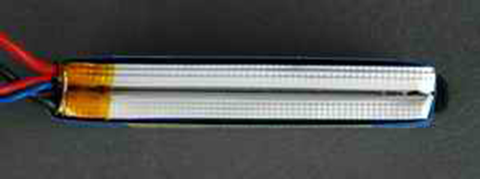
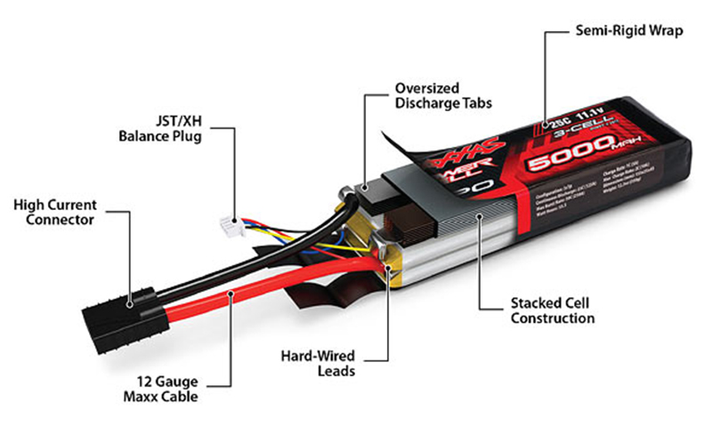

DRONE THEORY
01
02
what types of drones?
03
04
05
06
07
08
09
10
01
> > > > > > > > Part one - What is a drone?
WHAT IS A MULTICOPTER AND WHAT IS A DRONE ?
A multicopter is a mechanically simple aerial vehicle whose motion is controlled by speeding or slowing multiple downward thrusting motor/propeller units.
An unmanned aerial vehicle (UAV), commonly known as a drone, as an unmanned aircraft system (UAS), and also referred by several other names, is an aircraft without a human pilot aboard. The flight of UAVs may be controlled with various kinds of autonomy : either by a given degree of remote control from an operator, located on the ground or in another vehicle, or fully autonomously, by onboard computers
In the image we can see on the left a REAPER MILITARY UAV that is a "drone" due to his autonomous capabilities.
On the right is commercial DJI Phantom that is also a "drone" but also can be controlled in manual mode.
The term "drone" is lazy and inexact.
The fundamental difference between the terms “drone” and “quadcopter” is one of characterization – drone is the general term used for all unmanned aerial vehicles, though quadcopter identifies with a particular set of drones with four engines that make lift for vertical takeoff through their propellers
1. It isn't wrong to call almost any kind of remotely or self-directed vehicle a "drone."
2. All unmanned aircraft may be considered "drones."
3. It's basically impossible to come up with a currently flying example of a quadcopter that isn't an unmanned aircraft (part of an "unmanned aircraft system") and therefore, at the end of the day... a drone.
Quadcopter is drone, it’s a fact. Pretty much like bacon is pork or maybe...a cow ?

What is the difference between a multicopter and a a drone ?
A multicopter becomes a UAV or Drone when it is capable of autonomous flight. Normally this means taking the accelerometer and gyro information and combining it with barometer and GPS data so the flight controller understands not only it’s orientation but also it’s position.
What does it means ? We can program it to go somewhere autonomously do something and return home.
There is a video examplo of a "drone" multicopter wich can switch between "manual mode " and "autonomous mode".
02
> > > > > > > > Part two - What types of drones?
Toy
The great majority of the drones you see available all over the web. These are very simple crafts that don’t have a lot of expectations, other than having fun and learning what controlling a multicopter feels like. The great majority of Toy drones are in the quadcopter style. The range in Toy drones can be anything from a simple quadcopter with a small camera to record to something to something larger, but still the same form and function. Expect to pay anywhere around $20 to $500. Common brands include Syma, Hubsan, Parrot, Estes, Neewer, Cheerson, UDI, and others. For deeper recommendations of toy quadcopters, check out our article on three of our favorites.

Camera
The real division between this class of drones and Toy drones will be in the technology they utilize. I call these Camera drones, but they can also be called Hobby drones. Camera drones are much more expensive, but come with much higher end technology. They will often have higher end cameras (capable of recording in 4K), advanced navigation components (such as GPS, vision positing, etc), as well controllers with higher end features. Many also relay video stream from the craft down to the pilot’s smart phone or tablet to give a kind of first person view. Camera drones will focus more on the camera and its ability to capture high end footage. In order to do so, they may also employ the assistance of a gimbal of some kind. The gimbal provides stabilization via a number of different axes. General cost is between $500 and $2,000. Common brands include DJI, 3DR, Yuneec, Walkera, and others.

Cinema
Cinema drones are similar to Camera drones, but they take things to an entirely new level. While Camera drones will capture great stabilized footage with either a proprietary camera or a GoPro, Cinema drones offer higher weight carrying capacity to allow a user to carry anything from a DSLR Camera to a high end film camera like a RED Digital Cinema camera. At this point you will often see an increased number of arms and motors as well as size. Cinema drones offer no compromise when it comes to quality and features. Price range can go from $2,000 to higher than $15,000. Companies might include Freefly, DJI, xFold, and more custom made drones.

Industrial
Industrial Drones are a very niche category currently. Really what sets apart an Industrial drone apart is more in what type of payload it is carrying. Instead of a camera that records 4K video, it might carry a LIDAR system or thermal camera. These drones fit specific roles in different industries. Maybe you’re a farmer who wants to look at the hydration of your crops, or a ski patrol wanting to use thermal vision for search and rescue, the applications are wide. Not for your typical consumer, but this category is quickly expanding. Can range anywhere from the low thousands of dollars to several tens of thousands of dollars.

FPV Racing
Taking quadcopters and pushing them to their flying limits! These quadcopters are typically smaller in size, around 250mm in diagonal length, and are meant to push the limits of both speed and maneuverability. For a great introductory look at the components that make up and FPV Racer, be sure to read James’s post. FPV Racers are made FPV (first person view) by having an on-board camera and a system in place to relay the camera footage to the pilot in real-time allowing the pilot to have a “cockpit” type view. The components come from a very wide range of manufacturers and many new ones are being made all the time. A typical FPV setup will cost anywhere from $300 to $800 or more.

FIGHTING
That kind of quadcopter are for aerial fight where the last standing multicopter in the air wins.These types of multicopters are very powerfull and durable.Theirs frames are almost unbreakable and can also have weapons or defenses.

03
> > > > > > > > Part three - How a drone flies
P-I-D correction algorithms
There are three parameters that a pilot can adjust to improve better quadcopter stability > > >P.I.D

There are 3 algorithms in a PID controller, they are P, I, and D respectively. P depends on the present error, I on the accumulation of past errors, and D is a prediction of future errors, based on current rate of change. These controller algorithms are translated into software code lines.
ACROBATIC FLIGHT
- requires a slightly higher P
- requires a slightly lower I
- increase D
GENTLE SMOOTH FLIGHT
- requires a slightly lower P
- requires a slightly higher I
- decrease D
HERE YOU CAN SEE A VIDEO EXAMPLE OF DIFFERENT SETTINGS
MOVEMENTS OF FLYING VEHICLES

04
> > > > > > > > Part four - remote controller/transmitter
TRANSMITTER MODES / HOW TO DRIVE THE VEHICLE
The remote control has some common main functions. For full autonomous operation at least six channels are required,with more you can assign more functions.
- Throlle > > > up/down in multicopters
- Yaw / Rudder > > > rotation on the Z axes
- Roll / Ailerons > > > rotation on the X axes
- Pitch / Elevator > > > rotation on the Y axes
- Mode switch1/2/.. > > > function assignation

You'll see from the above 4 modes but few people fly anything other than Mode 1 or 2. There are also modes 5-8 where the elevator is reversed so the model goes up when you push the stick forward (yes, I have come across somebody who flew this way, he had no help when he started out and it made sense to him)
There is no right or wrong way to learn, the percentages of people flying on each mode varies in the UK and USA it is mainly mode 2, Europe and Australia mode 1.
Most people the world over fly mode 1 or 2, so which should you chose?
The technical answer is that for aircraft mode 1 is considered better as it separates the two main controls (aileron and elevator), which helps when flying precision aerobatics, also helps turning in racing multirotors as you mainly rotate with the rudder aka yaw, but there are many top competitive aerobatic pilots flying mode 2.
Mode 2 is considered easier to learn as you predominately use your right hand and most people are naturally right handed.
All the transmissions between the remote and the receiver come in a "coded" frecuency the normal outputs for Radiocontrol frecuencies are CPPM / PPM sum signal, S-BUS or Spektrum Satellite. They are mainly propietary brand modulations, so if you get a Spektrum you can only use spektrum products or modulation compatible one.
Most people are using 2.4GHz technology, but we can still encounter some “old” 35MHz and 72MHz systems.
We carefull wich one you buy the first time! Some are more expensives have more options than others.
More commons modulations are :
- Spektrum and DSM Compatible Receivers
05
> > > > > > > > Part five- the motors
MOTORS BASIC CONCEPTS
A multicopter is more efficient when it’s lighter, so you need to pick a good battery that has good capacity but light weight.Although you can choose the motors for the weight you want to carry, it’s always a good idea to carry as little weight as possible. Lightness is very important to all aircraft because any excess weight could reduce your battery life and maneuverability
A rule of thumb is Required Thrust per motor = ( Weight x 2 ) / 4
Brushed vs Brushless
Advantage of brushed motors
-Inexpensive
-Simple wiring
-No need specialized ESC
Advantages of brushless
-Very low maintenance
-Higher speeds achievable
-Higher efficiency
Motors used these days are almost exclusively of the “brushless” variety. That equates to minimal friction.A cylindrical shell of magnets rotates on precision bearings around a core of tightly and neatly coiled wire.
Battery and weight is not the only factor we need to consider when it comes to Efficiency, there is also motor efficiency. When choosing motors, apart from motor KV and thrust, we also need to look at Watt’s and efficiency.
MATCHING AN ESC TO YOU MOTOR (Electronic Speed Controller)
Now that we have confirmed that this motor is suitable for our application, we look at the Amp draw for our chosen motor/battery/propeller. In our case, this is maximum of 7.5A for a 5x3 prop, and 11.5A for a 6x3 prop. Since in our build we chose the 9x4 propellers, so we will need to use an ESC that is rated over 20A, so an30A ESC would be a good choice for this motor/propeller running on a 3S battery.
06
> > > > > > > > Part six - propellers
PROPELLERS AND ROTATION

A quadcopter uses two clockwise(CW) and two counter-clockwise(CCW) propellers. Propellers are classified by length and pitch. For example 9×4.7 propellers are 9 inch long and has a pitch of 4.7.
Generally, increased propeller pitch and length will draw more current. Also the pitch can be defined as the travel distance of one single prop rotation. In a nutshell, higher pitch means slower rotation, but will increase your vehicle speed which also use more power
.
There are a few different types of propellers, such as plastic, carbon fibre etc.
A higher pitch propeller moves greater amount of air, which could create turbulence and cause the aircraft to wobble during hovering. If you notice this with your quadcopter, try to choosing a lower pitched propeller.
When it comes to the length, propeller efficiency is closely related to the contact area of a prop with air, so a small increase in prop length will increase the propeller efficiency. (pretty much like swimmers with larger hands and feet can swim faster, but also more tiring for them)
The orientation of the propeller depends mainly on your frame configuration.Each propeller needs an "opposite" so the torque that it produces is eliminated by another one.
07
> > > > > > > > Part seven - Configurations

Helicopter
A classic craft many people are familiar with. Check out explainthatstuff.com for a more in-depth look at the technology of a helicopter. In the RC world, helicopters can range greatly from the toy level to the high-end pro-hobbyist level. The high-end helicopters can have incredibly finite control of movement and are powered by fuel.
Monocopter
A craft that is propelled and controlled with a single rotor. Very experimental and not practical for a hobbyist or consumer. Most monocopters are test type designs and aren’t very common among drones.
Bicopter
Bicopters are similar to Monocopters in that they are much more uncommon and experimental in nature. The most famous bicopter is probably the Bell Boeing V-22 Osprey. The Osprey is controlled via two rotors that rotate to allow for both vertical take-off and forward movement. While it did try to combine the convenience of vertical take-off without jet motors, like the Harrier Jump Jet, and long distance flight, it is very technically complicated. Interestingly a drone company xCraft, did develop a drone which behaves like a typical quadcopter when taking vertical flight, it does move into a sideways position for longer distance flying.
Tricopter
A craft that’s powered by three motors. Still very much an uncommon type of craft. When compared to a quadcopter (which uses four motors), you do lose lifting power, but gain simpler construction and a change in maneuverability. Many people also prefer this configuration as it is much less common while still being viable.
Y6
Y6 is a common term to describe the formation of a tricopter that uses six motors. The motors are paired together on the arms, where one is above the frame and one is below. This allows for more power (more thrust) without having to add more arms or increasing the size of the craft. Still a very uncommon craft.
Quadcopter
The bread and butter. The reason drones have become so incredibly popular today. A quadcopter is a formation in which it has four arms, each of which has its own motor. They are much simpler to fly when compared to other flight crafts. They can be much smaller and carry more weight. Thanks to the onboard computers being so smart and capable of doing a portion of the flying for the pilot, it becomes incredibly accessible for people to capture incredible footage without being experts at flying the craft itself. When people were able to take a craft up into the air, easily capture a viewpoint we’ve never seen before so simply, it exploded the world of drones.
VTail
A quadcopter that still has four motors to create thrust, but in a VTail formation, two of the four motors are placed closer together and also placed at an angle. Looks pretty fantastic, but seems to only have downsides when speaking in terms of flight performance. Less overall thrust and worse maneuvering, but it looks cool!
X8
Similar to a quadcopter, but instead of only four motors, it has eight motors. Still in the same shape and form as a quadcopter, but has a motor both above and below the arms.Increases the carrying capacity
Hexacopter
A craft which has six arms and six motors. The additional arms provide greater lift . Hexacopters are great when you care more about your payload (such as an expensive camera) and in the case of a failure.
Octocopter
Six motors was pretty good, why not eight! The additional two arms are even more redundancy and stability. The main downside to this is the increased cost. An octocopter setup is most ideal of Cinema style drones.
08
> > > > > > > > Part eight - batteries " Hello Lipo "

LiPo batteries (short for Lithium Polymer) are a type of rechargeable battery that has taken the electric RC world by storm, especially for planes, helicopters, and multi-rotor. They are the main reason electric flight is now a very viable option over fuel powered models.
> > > LiPo batteries are light weight and can be made in almost any shape and size
> > > Rc LiPo have large capacities, meaning they hold lots of energy in a small package
> > > Rc LiPo have high discharge rates to power the most demanding electric motors
VOLTAGE
Unlike conventional NiCad or NiMH battery cells that have a nominal voltage of 1.2 volts per cell, LiPo battery cells have a nominal voltage of 3.7 volts per cell.
3.7 volt battery = 1 cell x 3.7 volts (1S)
7.4 volt battery = 2 cells x 3.7 volts (2S)
11.1 volt battery = 3 cells x 3.7 volts (3S)
14.8 volt battery = 4 cells x 3.7 volts (4S)
18.5 volt battery = 5 cells x 3.7 volts (5S)
22.2 volt battery = 6 cells x 3.7 volts (6S)
29.6 volt battery = 8 cells x 3.7 volts (8S)
37.0 volt battery = 10 cells x 3.7 volts (10S)
44.4 volt battery = 12 cells x 3.7 volts (12)
Unlike conventional NiCad or NiMH battery cells that have a nominal voltage of 1.2 volts per cell, LiPo battery cells have a nominal voltage of 3.7 volts per ceLL
CAPACITY
Capacity indicates how much power the battery pack can hold and is indicated in miliamp hours (mAh). This is just a fancy way of saying how much load or drain (measured in milliamps) can be put on the battery for 1 hour at which time the battery will be fully discharged.

The main thing to get out of this is if you want more flight time; increase the capacity of your battery pack. Unlike voltage, capacity can be changed around to give you more or less flight time.
DISCHARGE RATE
Discharge rate is simply how fast a battery can be discharged safely. Remember that ion exchange thing further up the page? Well the faster the ions can flow from anode to cathode in a battery will indicate the discharge rate. In the RC LiPo battery world it is called the “C” rating.

Most RC LiPo Battery packs will show the continuous C rating and usually a maximum burst C rating as well. A burst rating indicates the battery discharge rate for short bursts (a few seconds maximum) of extended power. An example might be something like "Discharge rate = 25C Continuous/50C Bursts".
09
> > > > > > > > Part nine- "flight controller"
Naze 32 rev6
The Naze32 is a small (36x36mm) flight controller based on 32-bit STM32 processor running at 72MHz. Comparing to other popular FC such as the KK2, APM2, and Crius AIO, which are all based on 8-bit platform running at 16Mhz.This board comes with two flavors, Acro Naze32 (FunFly) and Full Naze32.We are usin the ACRO version also called 6dof
Although the Naze32 uses ported version of Multiwii, it’s not exactly a Multiwii flight controller, because it uses different type of processor (STM based). Normally, multiwii FC for example the Arduino, or Crius AIO FC are Atmel based.
This FC is getting more and more popular with mini size multicopter, due to it’s excellent performance and small size.
If you have already used Naze32 before, you probably have installed the driver. But if you are new, or you are using a new computer that never has connected a Naze32 before, you will have to install the Driver first. Otherwise your board is not recognised and it won’t be assigned a COM port.
We are goint to use CLEAN FLIGHT SOFTWARE FOR CONFIGURING THE PARAMETERS OF THE BOARD here is the download link
There’s a link for the driver right in the Cleanflight GUI , but in case you can’t find it, here is the driver download address.
Once the driver is installed successfully, you should see this in your device manager, with a COM port number assigned. If not, try to restart your computer first.
FLASH FIRMWARE ON THE BOARD
When you open the CleanFlight GUI, you will notice it won’t connect no matter how hard you press the “connect” button.
Firmware flashing is really simple and straight forward. Open the Configurator GUI, choose the COM port for your board. Then go to “Firmware Flasher”
LEDs on your Naze32 or CC3D will start blinking, when it finishes flashing firmware, the LED will stay on solid again. This will take less than a minute.
Some people might accidentally flash the wrong firmware (e.g. flashed CC3D version on the Naze32), and you can’t talk to the board anymore. Simple fix is to short the bootloader pads on the board, and check “No Reboot Option” and “Flash on connect” (only appear when the first option is checked). Then load the correct firmware and flash again
10
> > > > > > > > Part ten- "fly"
For basic fly learning we are going to use the EACHINE H8 minimulticopter that is a affordable,resistant and flies in a very similar way to bigger drones. It has a sport mode and can do flips.
How to setup the flight controller
All the contents are created by Eduardo Chamorro and are licensed under a Creative Commons Attribution-NonCommercial-ShareAlike 4.0 International License.